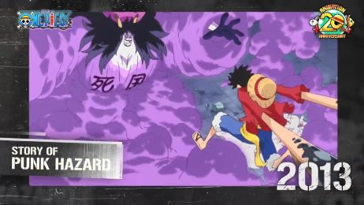

东海篇
故事开始于东海，年少的路飞遇到了在风车村停留的红发香克斯的海贼团，并误食了恶魔果实，变成了橡胶人。之后又遇到了山贼一伙，战斗过程中路飞不慎落水，香克斯为救路飞被近海之王废掉一臂。经过这件事之后，路飞立志出海。
《海贼王》的世界中存在一片巨大而连贯的陆地——红土大陆，这片陆地环绕世界一周，几乎完美地将海洋割据为两个等分。 而与这座大陆垂直相交的一片环状海域即是世界上最神奇，同时也是最危险的一条航道——伟大航路。
伟大航路篇
阿拉巴斯坦篇
阿拉巴斯坦事件前王下七武海克洛克达尔主导的秘密犯罪组织“巴洛克工作社”在此施行“理想乡作战”。国内除了首都阿尔巴那外完全不下雨的日子持续了三年，在巴洛克工作社的故意安排下，让国民以为旱灾是国王私下使用催雨剂“跳舞粉”所致，因而引发内战死伤惨重。后来在薇薇公主和草帽海贼团的努力下，克洛克达尔被打败，国家下的第一场雨同时也平息了战火。纪录指针存满需五天。
离开阿拉巴斯坦王国后，想要前往下一个岛的草帽一行人意外发现一艘从天而降的大船。通过罗宾从魔谷镇得来的情报得知，“加雅岛”有个被居民逐出"魔谷镇"的大叔，他似乎知道到达“空岛”的方法。从岛西的城镇离开后，他们来到“加雅岛”东部的海岬，遇到了文布兰·库力克，并被帮助前往“空岛”。在空岛艾尼路与路飞展开激烈交战，最后路飞以“橡胶黄金螺旋弹”将艾尼路击败，同时敲响了黄金钟，告知加雅岛的库利克，黄金乡是存在的.
空岛篇
长环岛篇
一行人后来来到了长环长岛，遇到弗克西，拥有迟缓果实能力的弗克西向鲁夫挑战Davy Back Fight比赛。 胜利者可以从败方选择得到一名成员或选择标志。 被夺走标志后不得再挂上该标志，以及被夺走的同伴、标志等，都必须在由Davy Back Fight夺回。事情结束后，他们又遇上了海军上将库山，而他的目的是歼灭妮可·罗宾。 为了保护罗宾，路飞一行人和这个强敌战斗，败得一塌糊涂，最后却被放过一马。罗宾和鲁夫在团员们的合力抢救下捡回一命。
草帽一行人在罗宾和路飞痊愈后，为了寻找船匠伙伴和修理前进梅利号而来到以造船出名的水之七岛。罗宾与乔巴在镇上逛街，因罗宾被CP9胁迫，故而离开草帽一伙。“前进梅利号”因“龙骨”已经严重受损，无法航行到下一座岛。路飞以船长的立场决定更换一艘新船，乌索普对这突如其来的决定感到相当震怒，与路飞决斗，最后战败然后离开了“草帽一行人”
水之都篇
司法岛篇
后来，草帽一行人最终击败了所有“CP9”并成功解放罗宾;其中号称“历史上最强的CP9”罗布·路基也被路飞击败，八百年来传颂的“CP9”不败神话破灭了
一行人捡到一个祭祀海神的酒桶，打开后里面竟冲出诡异的红色闪光，接着万里阳光号因暴风雨而航行到魔幻三角地带，在那里遇见吃了“黄泉果实”的神秘骷髅人布鲁克，就在他们和布鲁克对话时，船渐渐驶向世界最大海贼船“恐怖三桅帆船”.草帽一行人陆续登陆恐怖三桅帆船，随后得知居住在“恐怖三桅帆船”里的是王下七武海月光·莫利亚。最后击败他后，布鲁克为了完成和拉布的约定，以音乐家身份加入“草帽海贼团”。
恐怖三桅帆船篇
香波地群岛篇
离开“魔鬼三角地带”后，草帽一伙来到香波地群岛为船镀膜从而前往鱼人岛。在寻找上膜工人的途中，认识的人鱼凯米被绑架集团“猎狗宠物团”绑走并送进拍卖场进行拍卖，草帽海贼团到“人类拍卖会场”。会场上鱼人小八被天龙人开枪射击，路飞愤而打伤天龙人导致“天龙人事件”发生。海军大将“黄猿”来到香波地诸岛，众人不敌，雷利前来相助，后来全团船员更被突然出现的“王下七武海”之“暴君”巴索罗米·熊的能力传送到别的地方去。
路飞被大熊传送到女儿岛亚马逊·百合，路飞食物中毒，并为玛格丽特及同伴所救。
女儿岛篇
海底监狱篇
路飞为救哥哥在推进城与麦哲伦激战，并在这期间意外解释了多名实力出众的强者最后一起越狱前往顶上战争，还有伙伴们在世界各地冒险的故事。
路飞为了救出哥哥艾斯，先是闯入世界第一的大监狱——推进城“因佩尔顿”，随后集结了在推进城认识的安布里奥·伊万科夫，“海侠”甚平等人来到原海军本部所在的岛屿“马林梵多”，加入顶上战争。在路飞的不懈战斗，以及众人的帮助中，路飞成功救出艾斯。随后却因为大将“赤犬”萨卡斯基的阻扰，艾斯为保护路飞而死，面对死在自己面前的哥哥，路飞受不了打击而失去意识。
顶上战争篇
新世界出发--鱼人岛篇
草帽一行人正式潜入深海来到鱼人岛。并打败了企图攻占“鱼人岛”主权的“新鱼人海贼团”与狂追求“白星”的范德戴肯九世。之后路飞向甚平提出希望他加入草帽一伙。甚平则以自己仍有未完之事婉拒，答应路飞一旦事情解决，非常乐意加入草帽一伙。
离开鱼人岛进入新世界，庞克哈萨德是草帽海贼团进入新世界后登陆的第一个岛屿。草帽海贼团与新晋“王下七武海”特拉法尔加·罗在此岛组成海贼团同盟，预谋拉下一个四皇。在罗与路飞的商议下，为了引出M·凯撒·库朗背后的那位四皇，两人决定先抓住凯撒，而路飞负责抓获凯撒，罗则负责破坏SAD 。路飞与罗，斯摩格三人联手逃出了牢笼 ，随后展开了各自的战斗。凯撒被路飞打败。
庞克哈萨德篇

德雷斯罗萨篇
草帽一行人与罗来到德雷斯罗萨。一行人在上岸之后开始商讨潜入岛上之作战，决定分别由特拉法尔加·罗、罗宾及乌索普负责押送凯撒，前往格林比特;而娜美、乔巴及布鲁克带着桃之助留下守护万里阳光号。在经过了一系列激战过后，最终路飞开启了他的必杀技——四档打败了多弗朗明哥，结束了多弗朗明哥在德雷斯罗萨中这10年的血腥统治。
帽一伙乘坐巴托洛米奥的船来到了佐乌岛。与先前达到佐乌的娜美，乔巴等人汇合，得知岛上的情况，并了解到山治和凯撒被与路飞同为超新星的卡彭·贝基带走。之后为了对付凯多，和罗、以锦卫门等人为首的和之国武士们、以犬岚公爵为首的毛茸茸公国战士组成海贼同盟。随后为了救回山治，路飞、娜美、乔巴、布鲁克、毛茸茸公国的佩洛德、加洛特以及波克姆兹前往由四皇之一BIGMOM统治的蛋糕岛进发，而其他人偕同罗和锦卫门前往和之国。
佐乌篇
蛋糕岛篇
众人来到了BIGMOM领地之一巧克力岛，在巧克力城镇上大吃特吃，随后遇到了山治的未婚妻，准备结婚，路飞笑着决定要将婚礼砸个稀巴烂。在约定之地听从甚平的建议，决定与贝基和凯撒联手暗杀大妈并救出文斯莫克一族。茶会开始前路飞在贝基体内睡觉。在茶会开始后听见卡塔库栗的枪声，利用布蕾的能力制造出无数分身从婚礼蛋糕里跳出震惊全场。攻击修女照片时被卡塔库栗困住，被甚平解围，甚平当众与大妈做出了结并宣布加入草帽海贼团。
世界会议篇是ONE PIECE的第三十个小篇章，四皇编第三个小篇章，剧情继续自蛋糕岛篇。自草帽海贼团在BIG MOM海贼团的行动被公诸于世，世界各地的王族们齐聚出席世界会议。与此同时，革命军正准备下一步大行动。
世界会议篇
和之国篇
和之国篇是ONE PIECE系列第三十一个篇章，也是四皇篇的第四个篇章，剧情从世界会议篇继续。忍者海贼纯毛武士联盟开始在和之国招兵买马，准备把和之国从将军黑炭大蛇和其盟友——四皇海道的统治中解放。与此同时BIG MOM海贼团因为之前在托特兰的事情也来到了和之国找草帽一伙报仇。